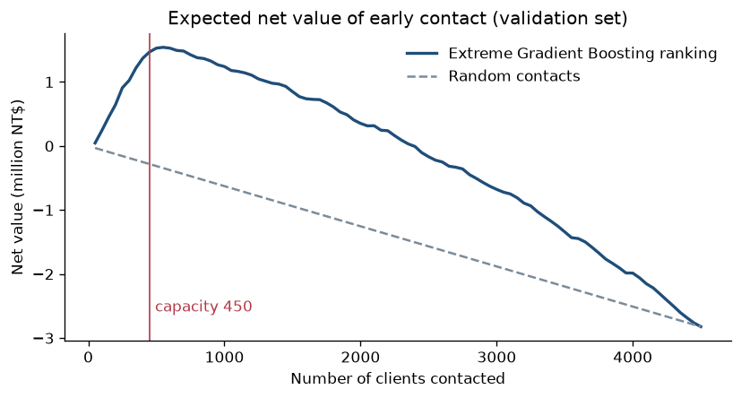

FI510E AI & Business Applications, Midterm 1, Rabat Business School
Elisa Ouillet, Iulia Kozhina, Lucas Clodic | 3 November 2026
Dataset: Default of Credit Card Clients, UCI Machine Learning Repository (Yeh & Lien, 2009),
archive.ics.uci.edu/dataset/350
Notebook and code: github.com/juliakozhina2966-cpu/Midterm1_AI_Applications
A credit card company loses money when clients stop paying their bills. Its collections team can only contact about 10% of the clients each month, which means 450 calls for 4,500 clients. If the team calls the right clients before the due date, it can send a reminder or offer an instalment plan and recover part of the debt. If it calls good clients, it wastes time and annoys them.
Our model answers one question: which clients will miss next month's payment? One observation is one client at the end of a monthly statement. The target is 1 if the client did not pay in October 2005. The prediction is used right after the September statement, before the October due date, to decide who is called first.
The dataset contains 30,000 clients of a Taiwanese bank from April to September 2005. For each client we have the credit limit, education, sex, marital status, age, and for each of the six months the repayment status, the bill amount and the amount paid (in New Taiwan dollars, NT$). 22.1% of the clients defaulted, so a model that always predicts "no default" is already right 77.9% of the time.
Data quality. There are no missing values and 35 duplicated rows, which we kept because two clients can have the same history. Some codes are not explained by the data provider: education 0, 5 and 6 were grouped into "other", and marital status 0 into "other". For the repayment status, the codes -2 and 0 are also not documented; based on other public analyses we read them as "no balance" and "minimum paid".
Variables excluded. We removed the ID (it is only an identifier) and the target. We also removed sex, marital status and age, because a bank should not use them in a credit decision. This costs almost nothing: the ROC-AUC changes by at most 0.002.
Target leakage. All the variables we use are known in September, before the October payment. The scaling and encoding are learned on the training data only. We also created seven new variables that a credit analyst would look at, such as the share of the credit limit used, the share of past bills repaid and the number of months late. They improve the Logistic Regression ROC-AUC from 0.713 to 0.755.
Split. All clients are observed at the same date, so we could not split by time. We used a stratified split: 70% for training (21,000 clients), 15% for validation (4,500) to compare the models, and 15% for the final test (4,500), used only once.
We compared a simple baseline ("nobody defaults") with five models seen in class: Logistic Regression, Decision Tree, Random Forest, Support Vector Machine and XGBoost. Before looking at the test set, we decided to choose the model with the best Average Precision on the validation set, because it measures whether the real defaulters are at the top of the ranking. Random Forest and XGBoost were almost equal (0.552 and 0.550). When we ran the same code on two different laptops, the XGBoost score changed slightly, so we treated the difference as noise and kept the Random Forest, whose result does not change.
| Model (validation set) | Accuracy | Precision | Recall | F1-score | Avg. Precision | ROC-AUC | Defaulters in top 450 |
|---|---|---|---|---|---|---|---|
| Baseline (nobody defaults) | 0.779 | 0.000 | 0.000 | 0.000 | 0.221 | 0.500 | ~99 |
| Logistic Regression | 0.811 | 0.659 | 0.304 | 0.416 | 0.512 | 0.755 | 298 |
| Decision Tree | 0.813 | 0.636 | 0.358 | 0.458 | 0.512 | 0.764 | 307 |
| Random Forest | 0.814 | 0.648 | 0.348 | 0.453 | 0.552 | 0.777 | 310 |
| Support Vector Machine | 0.814 | 0.662 | 0.321 | 0.432 | 0.497 | 0.715 | 304 |
| XGBoost | 0.817 | 0.660 | 0.356 | 0.462 | 0.550 | 0.779 | 310 |
| Random Forest on the test set | 0.817 | 0.659 | 0.355 | 0.462 | 0.556 | 0.782 | 317 |
Table 1. Model comparison. Accuracy, precision, recall and F1-score are computed with a 0.50 threshold.
The baseline has 77.9% accuracy but finds no defaulter at all, so accuracy is not a good criterion here. With a 0.50 threshold, all models miss about two thirds of the defaulters. On the test set, the confusion matrix of the Random Forest is: 354 defaulters found, 642 missed, 183 false alerts and 3,321 good clients correctly left alone.
However, the team does not use a threshold: it calls the 450 clients with the highest risk. In this list, the Random Forest finds 317 real defaulters out of 450 calls on the test set (70%), against about 99 with random calls. The test results are close to the validation results (ROC-AUC 0.782 vs 0.777), so the model does not overfit.
We used the following assumptions: a call costs 500 NT$, calling a good client adds 1,500 NT$ (annoyed client), and calling a future defaulter early saves 10% of their bill. With these numbers, a missed defaulter costs about 4,700 NT$ and a useless call costs 2,000 NT$. Missing a defaulter is therefore the most expensive error, but since the team can only make 450 calls, the model must put the real defaulters at the top of the list.
Because these costs are assumptions, we tested nine combinations (5%, 10% or 20% saved, and 1,000, 2,000 or 3,500 NT$ per false alert). The top 450 of the model is profitable in all nine cases, while 450 random calls lose money in six of them. The calls pay for themselves as soon as a call saves 2.3% of the bill. We also checked that the results are stable with a 5-fold cross-validation (Random Forest 0.562 ± 0.015, XGBoost 0.563 ± 0.013), and that giving more weight to defaulters does not improve the top 450 (310 vs 308 defaulters found).

Figure 1. Net value of the calls depending on the number of clients contacted (validation set). The model's ranking creates value up to about 650 calls; random calls always lose money.
Every month, after the statements, the bank should score all clients with the Random Forest and call the 450 clients with the highest risk, with a reminder and an instalment plan offer. The clients ranked 451 to 650 should receive an automatic SMS reminder, because the curve shows that contacting them still creates value. A fixed number of calls is easier to manage than a threshold, because it always matches the team's capacity.
On the test set, this rule reaches 317 defaulters with 450 calls and brings about +1.8 million NT$ (around 51,000 €) for 4,500 clients, under our assumptions. We also built a small web page that shows where one client would rank among 4,500 clients and what to do.
We started from the UCI dataset and its original article, and followed the structure of the Session 6 lab. Our own additions are the seven new variables, the test without sex, marital status and age, the cost analysis and the nine scenarios, the selection rule, the cross-validation and class-weight tests, and the web page.
| Member | Contribution | Presentation |
|---|---|---|
| Elisa Ouillet | To confirm: business framing, presentation slides | Business problem and data (about 2 min) |
| Iulia Kozhina | Data preparation, new variables, the five models, first version of the notebook, training script and website back end | Models and results (about 2 min 30) |
| Lucas Clodic | Reproducibility checks, baseline and confusion matrices, cost scenarios, cross-validation, website page, report | Recommendation, demo and limitations (about 2 min 30) |
References. Yeh, I.-C. & Lien, C.-h. (2009). The comparisons of data mining techniques for the predictive accuracy of probability of default of credit card clients. Expert Systems with Applications, 36(2), 2473-2480. UCI Machine Learning Repository, Default of Credit Card Clients (dataset 350).